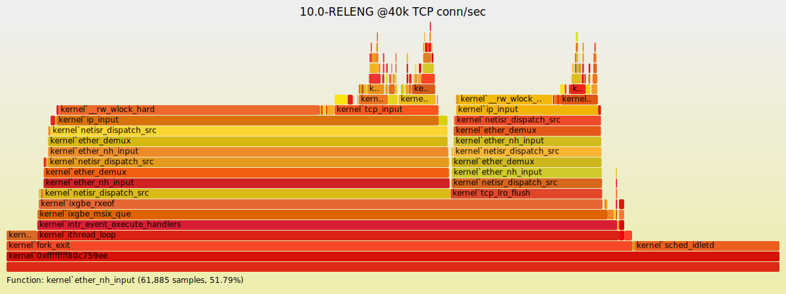

25 September 2015
How can an application use a multiprocessor effectively ?
Current operating systems can handle multiprocessors well. Performance evaluation is typically done with benchmarks. Because of simplicity Sweep3D will be used. Later it is planned to use some of the ASC benchmarks and other benchmarks.
Explicit parallelism is by domain decomposition and message-passing. This version of Sweep3D supports MPI message passing libraries as well as a single processor version. Here is a description Here are older benchmarks where I found the starting point.
Benchmarks for OpenMP.
SNAP an update of Sweep3D, intended for hybrid computing architectures.
Cosmological simulation GADGET - 2
Flame graphs are a visualization of profiled software, allowing the most frequent code-paths to be identified quickly and accurately.
